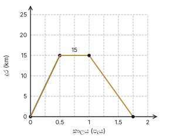
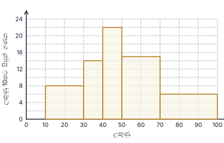
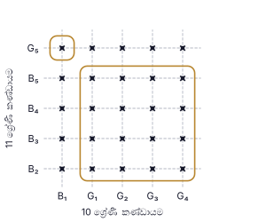
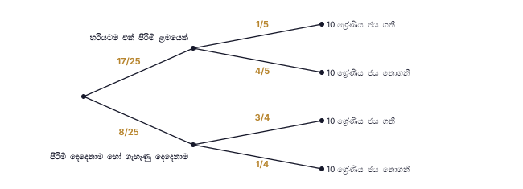

සටහන (ගුරුවරුන් සඳහා): A කොටස: ප්රශ්නයකට ලකුණු 2 බැගින් (නිවැරදි ක්රමයට / පියවරට ලකුණු 1, නිවැරදි පිළිතුරට ලකුණු 1). මුළු ලකුණු 50. B කොටස: ප්රශ්නයකට ලකුණු 10 බැගින්. මුළු ලකුණු 50. සෑම පියවරකටම හිමි ලකුණු දකුණු තීරුවේ දක්වා ඇති අතර ඒවා ප්රශ්න පත්රයේ මුද්රිත ලකුණුවලට සමාන වේ. නිවැරදි විකල්ප ක්රමවලට සම්පූර්ණ ලකුණු ලබා දෙන්න. ප්රස්තාරවලින් කියවන අගයන් සඳහා දක්වා ඇති පරාසය තුළ ඇති පිළිතුරු පිළිගන්න. ඒකකය නොමැති හෝ වැරදි වීම ප්රශ්නයක් තුළ එක් වරක් පමණක් දඬුවම් කරන්න. A කොටස — පිළිතුරු
1. සේවක-දින = 12 × 10 = 120; දින 6කට අවශ්ය සේවකයන් = 120 ÷ 6 = 20; අමතර සේවකයන් = 20 − 12
අවසාන පිළිතුර: සේවකයන් 8 දෙනෙකි
(ලකුණු 2) 2. E හරහා AB ට සමාන්තර රේඛාවක් අඳින්න: ∠BAE + ∠ECD = ∠AEC, එනිසා ∠BAE = 100° − 35°
අවසාන පිළිතුර: 65°
(ලකුණු 2) 3. හරවල කු.පො.ගු. = 12x: 5 × 6 + 7 × 4 − 1 × 3 12x 30 + 28 − 3 12x
අවසාන පිළිතුර: 55 12x
(ලකුණු 2) 4. ත්රිකෝණාකාර ඍජු ප්රිස්මයක මුහුණත් වනුයේ ත්රිකෝණ 2ක් හා සෘජුකෝණාස්ර 3කි (සමචතුරස්රයක් විශේෂ සෘජුකෝණාස්රයකි); සමචතුරස්රයක් නොවන රොම්බසයක් නොපවතී.
අවසාන පිළිතුර: (ii)
(ලකුණු 2) 5. 20° ↔ kg 30, එනිසා 1° ↔ kg 1.5; R හි කෝණය = 360° − 180° − 20° = 160°; ප්රමාණය = 160 × 1.5
අවසාන පිළිතුර: kg 240
(ලකුණු 2) 6. ADBE වෘත්ත චතුරස්රයකි: ∠ADB = 180° − 124° = 56°. DC කේන්ද්රය හරහා ගොස් AB හි මධ්ය ලක්ෂ්යය කරා යන බැවින් DC ⟂ AB හා DA = DB; DC මගින් ∠ADB සමච්ඡේදනය වේ: ∠CDB = 56° ÷ 2
අවසාන පිළිතුර: 28°
(ලකුණු 2) 7. 5(x2 − 9) = 5(x2 − 32 )
අවසාන පිළිතුර: 5(x + 3)(x − 3)
(ලකුණු 2) 8. lg 70 = lg (7 × 10) = lg 7 + lg 10 = 0.8451 + 1
අවසාන පිළිතුර: 1.8451
(ලකුණු 2) 9. a යනු B හරහා දැමූ තිරස් ඉරත් BC ත් අතර (එයට පහළින්) කෝණයයි; b යනු C හිදී CA (බිම) හා CB අතර කෝණයයි. B හරහා තිරස් ඉර AC ට සමාන්තර බැවින් a හා b ඒකාන්තර කෝණ වේ.
අවසාන පිළිතුර: a = b (ඒකාන්තර කෝණ)
(ලකුණු 2) 10. h = 6r: වක්ර පෘෂ්ඨය : පාදම = 2πr(6r) : πr2 = 12πr2 : πr2
අවසාන පිළිතුර: 12 : 1
(ලකුණු 2) 11. මුළු ප්රතිඵල = 4 × 4 = 16; ඓක්යය 10: (2, 8), (8, 2), (5, 5) → ප්රතිඵල 3
අවසාන පිළිතුර: 3 16
(ලකුණු 2) 12. BA = BD: ∠BDA = 40°, එනිසා ∠DBC = 40° + 40° = 80° (බාහිර කෝණය). DB = DC: ∠DCB = 80°. △ADC හි: x = 180° − 40° − 80°
අවසාන පිළිතුර: 60°
(ලකුණු 2) 13. A = {2, 3, 5, 7}, B = {1, 3, 5, 7, 9}; A ∪ B = {1, 2, 3, 5, 7, 9} (n = 6), A ∩ B = {3, 5, 7}
අවසාන පිළිතුර: (ii)
(ලකුණු 2) 14. 24x4 y5 8x2 y
අවසාන පිළිතුර: 3x2 y4
(ලකුණු 2) 15. පොදු අනුපාතය r = (−18) ÷ (−6) = 3; T5 = T3 × r2 = −18 × 9
අවසාන පිළිතුර: −162
(ලකුණු 2) 16. ∠BDC = ∠BAC = 41° (එකම ඛණ්ඩයේ කෝණ); ∠ADB = ∠BDC = 41°, එනිසා ∠ADC = 82°. ∠CBE = ∠ADC (වෘත්ත චතුරස්රයක බාහිර කෝණය)
අවසාන පිළිතුර: 82°
(ලකුණු 2) 17. 16, 24, 40 හි ම.පො.සා. = 8; x හි කුඩාම බලය = x; y හි කුඩාම බලය = y
අවසාන පිළිතුර: 8xy
(ලකුණු 2) 18. πr2 h = 3850 × h, එනිසා πr2 = 3850; r2 = 3850 × 7 22
අවසාන පිළිතුර: r = 35 cm
(ලකුණු 2) 19. DB = AD = 3 cm; BC = 2 × DE = 8 cm (මධ්ය ලක්ෂ්ය ප්රමේයය); AE = √(3² + 4²) = 5 cm, එනිසා EC = AE = 5 cm. පරිමිතිය = 3 + 8 + 5 + 4
අවසාන පිළිතුර: 20 cm
(ලකුණු 2) 20. අනුක්රමණය = 11 − 5 4 − 2
අවසාන පිළිතුර: y = 3x − 1
(ලකුණු 2) 21. ∠DAE = ∠BCD = 70° (සමාන්තරාස්රයක සම්මුඛ කෝණ); AE විෂ්කම්භයක් බැවින් ∠ADE = 90°; ∠AED = 180° − 90° − 70° = 20°; ∠DEF = 180° − 20°
අවසාන පිළිතුර: 160°
(ලකුණු 2) 22. පළමු වසර අවසානයේ මුදල = 44 100 − 2100 = 42 000; P × 105 100 100 105
අවසාන පිළිතුර: රු. 40 000
(ලකුණු 2) 23. CB = CD, එනිසා ∠CBD = (180° − 40°) ÷ 2 = 70°; AC ∥ BD නිසා ∠ACB = ∠CBD = 70° (ඒකාන්තර); ∠AEB = ½ ∠ACB
අවසාන පිළිතුර: 35°
(ලකුණු 2) 24. 4x > 2 − 23 = −21, එනිසා x > −21/4 (= −5¼)
අවසාන පිළිතුර: −5, −4, −3, −2, −1
(ලකුණු 2) 25. ∠BAC සමච්ඡේදනය කරන්න (A, චාප දෙක හමුවන ලක්ෂ්යයට යා කරන්න) හා B හිදී AB ට ලම්බකය අඳින්න (B, ඒ චාප හමුවන ලක්ෂ්යයට යා කර දික් කරන්න); මෙම රේඛා දෙක හමුවන ලක්ෂ්යය කේන්ද්රය O වේ. (ලකුණු 1: ∠BAC හි සමච්ඡේදකය සම්පූර්ණ කිරීම; ලකුණු 1: B හි ලම්බකය සම්පූර්ණ කර ඡේදන ලක්ෂ්යය O ලෙස ලකුණු කිරීම.)
අවසාන පිළිතුර: O = A හි කෝණ සමච්ඡේදකයත් B හි ලම්බකයත් ඡේදනය වන ලක්ෂ්යය
(ලකුණු 2)
B කොටස — පිළිතුරු සහ ලකුණු බෙදීම
ප්රශ්නය B1 (i) ආහාරවලින් පසු ඉතිරිය = 1 − 1 8 7 8 1 (ii) අනෙකුත් වියදම් = 2 7 7 8 1 4 7 8 5 7 1 ඉතිරිවන භාගය = 7 8 1 4 5 8 1 (iii) ලැබෙන මුදලින් 5 8 8 5 1 ආහාර = 1 8 1 4 1 (iv) ලැබෙන මුදල = රු. 60 000 + වැටුපේ රු. 60 000 ඉක්මවන කොටසෙන් 92% 1 115 200 − 60 000 = 55 200 = ඉක්මවන කොටසෙන් 92%, එනිසා ඉක්මවන කොටස = 55 200 × 100 92 1 වැටුප = 60 000 + 60 000 = රු. 120 000 1 (v) වැටුපෙන් ආහාර ප්රතිශතය = 14 400 120 000 1 = 12% 1
මුළු ලකුණු: 10
ප්රශ්නය B2 (a)(i) — සම්පූර්ණ කළ ප්රස්තාරය පහත දැක්වේ (0.5, 15) සිට (1, 15) දක්වා තිරස් රේඛාව (විනාඩි 30ක් රැඳී සිටීම) 1 (1.75, 0) ලක්ෂ්යය නිවැරදිව ලකුණු කිරීම (පැය 1 + විනාඩි 45 = පැය 1.75) 1 (1, 15) සිට (1.75, 0) දක්වා සරල රේඛාව යා කිරීම 1 (a)(ii) වේගය = දුර ÷ කාලය = 15 ÷ 0.75 (විනාඩි 45 = පැය 0.75) 1 = 20 km h−1 1 (b)(i) AEB චාපයේ දිග = 1 2 22 7 1 පරිමිතිය = 22 + 22 + 14 + 22 = 80 cm 1 (b)(ii) සෘජුකෝණාස්රයේ වර්ගඵලය = 14 × 22 = 308 cm2 1 අර්ධ වෘත්තයේ වර්ගඵලය = 1 2 22 7 2 1 308 ÷ 77 = 4 ගුණයක් 1

සම්පූර්ණ ප්රස්තාරය: (0, 0) → (0.5, 15) → (1, 15) → (1.75, 0). කුඩා කොටුවක අඩක් තුළ ඇති ලක්ෂ්ය පිළිගන්න. මුළු ලකුණු: 10
ප්රශ්නය B3 (i) වරිපනම් බද්ද = 120 000 × 15 100 1 = රු. 18 000 1 (ii) වාර්ෂික කුලිය = 15 000 × 12 = රු. 180 000; නඩත්තුව = 180 000 × 10 100 1 ඉතිරිය = 180 000 − 18 000 − 18 000 = රු. 144 000 1 (iii)(a) කොටස් ගණන = 10 800 ÷ 3 (එක් කොටසකට ලාභාංශය) 1 = කොටස් 3600ක් 1 ආයෝජනය කළ මුළු මුදල = 3600 × 50 = රු. 180 000 1 (iii)(b) එකතු කළ අමතර මුදල = 180 000 − 144 000 = රු. 36 000 1 ප්රතිශතය = 36 000 180 000 1 = 20% 1
මුළු ලකුණු: 10
ප්රශ්නය B4 (i) සිසුන් ගණන = උස × (පන්ති පළල ÷ 10) 1 30 – 40: 14 සහ 40 – 50: 22 1 50 – 70: 15 × 2 = 30 සහ 70 – 100: 6 × 3 = 18 1 (ii) 10, 30, 40, 50, 70, 100 පන්ති මායිම්වල හිස්තැන් නොමැතිව තීරු ඇඳීම; පළමු තීරු දෙකේ උස 8 හා 14 1 තුන්වන හා සිව්වන තීරුවල උස 22 හා 15 1 අවසාන තීරුවේ උස 6 (පළල් පන්ති සඳහා පළල් තීරු) 1 (iii) සමුච්චිත සංඛ්යාත 16, 30, 52, 82, 100 (සියල්ල නිවැරදි නම් ලකුණු 2; අවම වශයෙන් 3ක් නිවැරදි නම් ලකුණු 1) 2 (iv) ලකුණු 50ක් හෝ වැඩි සිසුන් = 30 + 18 = 48 (හෝ 100 − 52) 1 සම්භාවිතාව = 48 100 12 25 1
ලකුණු සිසුන් ගණන සමුච්චිත සංඛ්යාත 10 – 30 16 16 30 – 40 14 30 40 – 50 22 52 50 – 70 30 82 70 – 100 18 100

ජාල රේඛය: තීරු උස 8, 14, 22, 15, 6 (ලකුණු 10කට සිසුන් ගණන).
මුළු ලකුණු: 10
ප්රශ්නය B5 (i) දැලේ ලක්ෂ්ය 25ම “×” ලෙස ලකුණු කිරීම (තීරු 5 × පේළි 5) 2 (ii) ලක්ෂ්ය 1 (B₁ සමඟ G₅) හා ලක්ෂ්ය 16 (G₁, G₂, G₃, G₄ සමඟ B₂, B₃, B₄, B₅) වටා සංවෘත වක්ර 1 හිතකර ප්රතිඵල ගණන = 1 + 16 = 17 1 සම්භාවිතාව = 17 25 1 (iii) පළමු අතු: 17 25 8 25 1 “හරියටම එක් පිරිමි ළමයෙක්” යටතේ දෙවන අතු: 1 5 4 5 1 “පිරිමි දෙදෙනාම හෝ ගැහැණු දෙදෙනාම” යටතේ දෙවන අතු: 3 4 1 4 1 (iv) P(ජය නොගනී) = 17 25 4 5 8 25 1 4 68 125 10 125 1 = 78 125 1


මුළු ලකුණු: 10